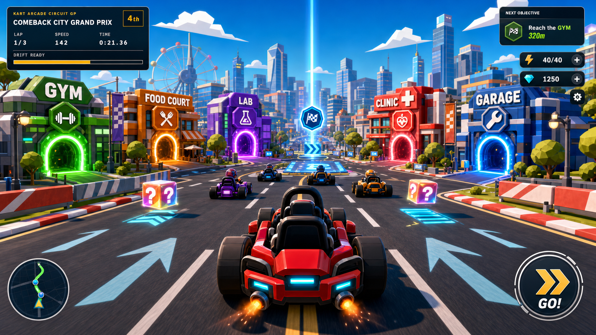
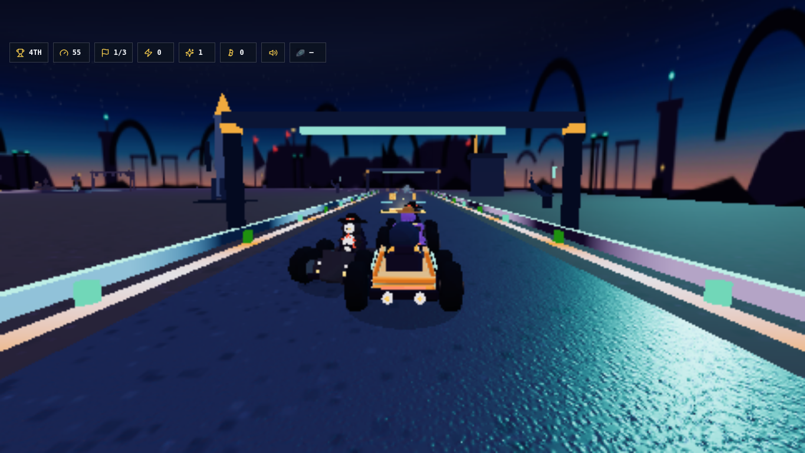
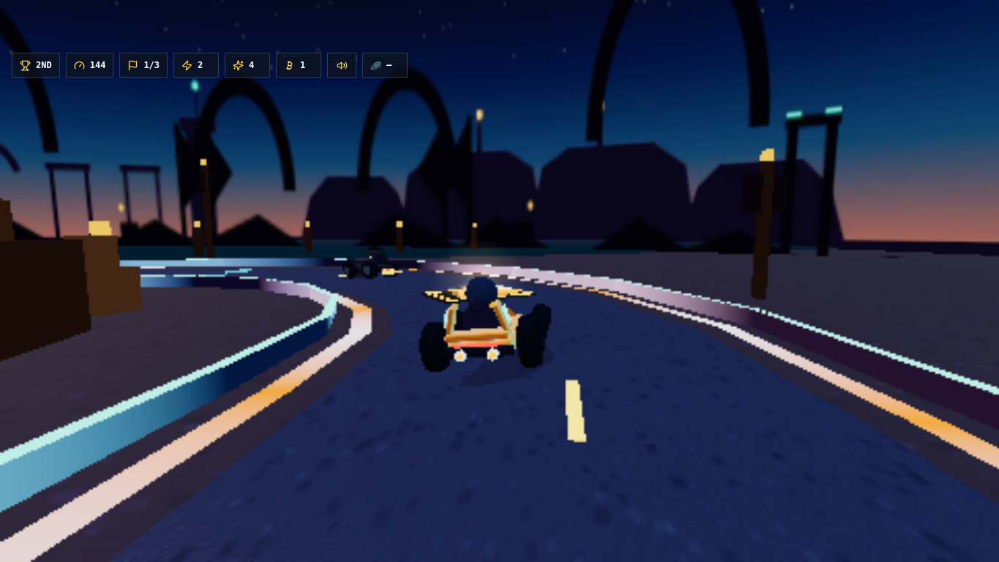
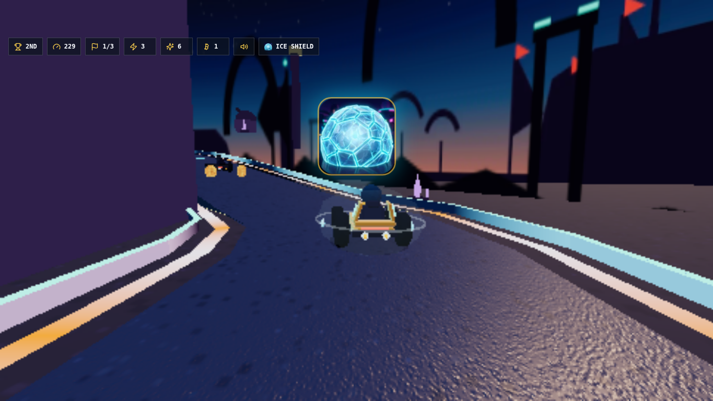
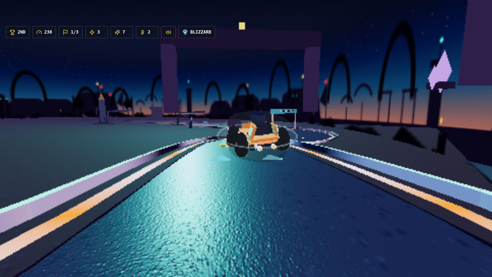
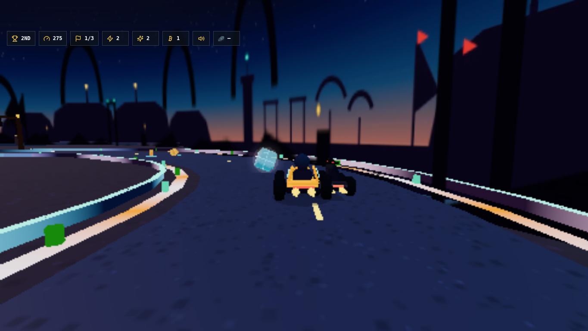

M3 frozen comparison — Inscription Circuit vs Comeback City / Penguin Village
Generated 2026-07-23T01:34:01.218Z from the live track definitions. The retired maps remain in the repo only as rejection evidence and legacy test fixtures.
1 · Topology (normalized centerlines, same scale method)
Comeback City (retired) — city-grid loop, central bridge
Penguin Village (retired) — dented oval
Inscription Circuit (NEW) — straight + east sweep + north pinch + west climb
| track | length | min radius | points | self-intersections | signature |
|---|---|---|---|---|---|
| comeback-city (retired) | 2889 | 7 | 81 | 1 | grid + bridge |
| penguin-village (retired) | 2442 | 72 | 112 | 0 | oval + dent |
| inscription-circuit (NEW) | 3108 | 51 | 143 | 0 | 3 districts + mesa crest + shortcut |
2 · Visual language (retired proofs vs new world)






3 · Palette
Retired CC: barrier red neon cyan park green magenta dusk Retired PV: snow ice cyan arctic sky
NEW Inscription Circuit: carved stone runway teal runway orange lantern gold mesa violet beacon gold flag red